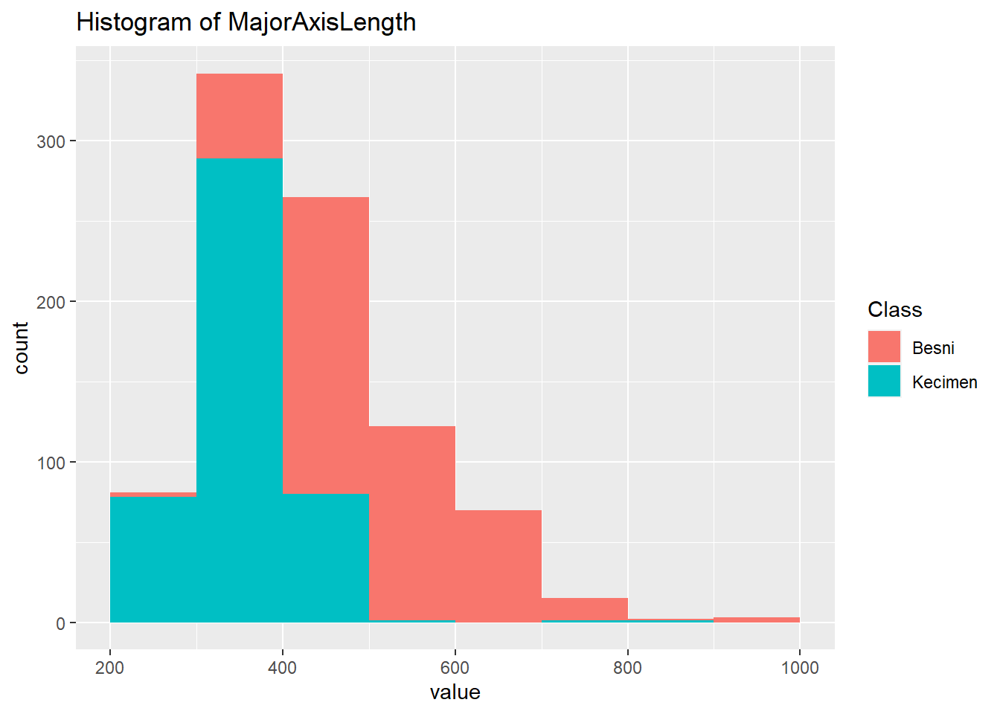
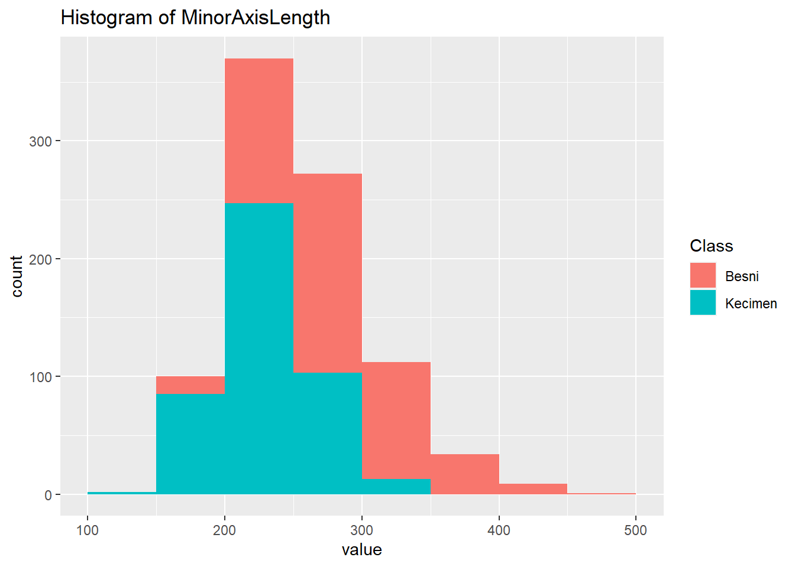
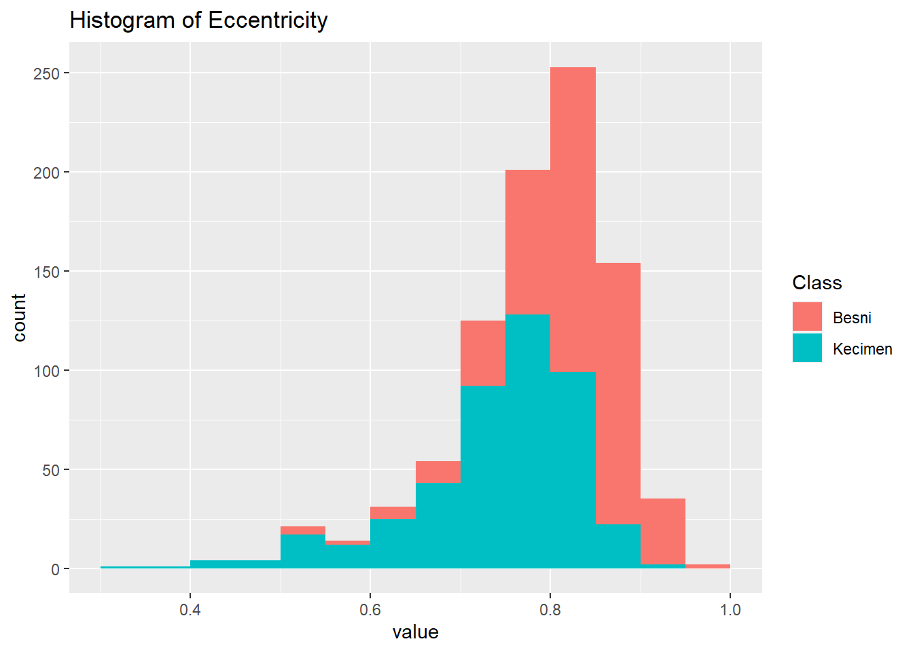
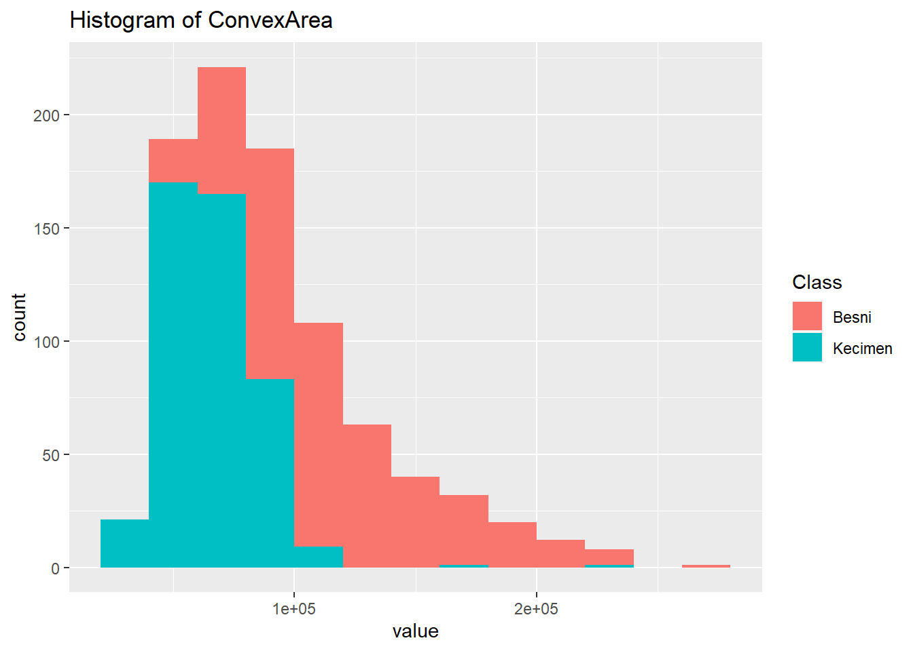
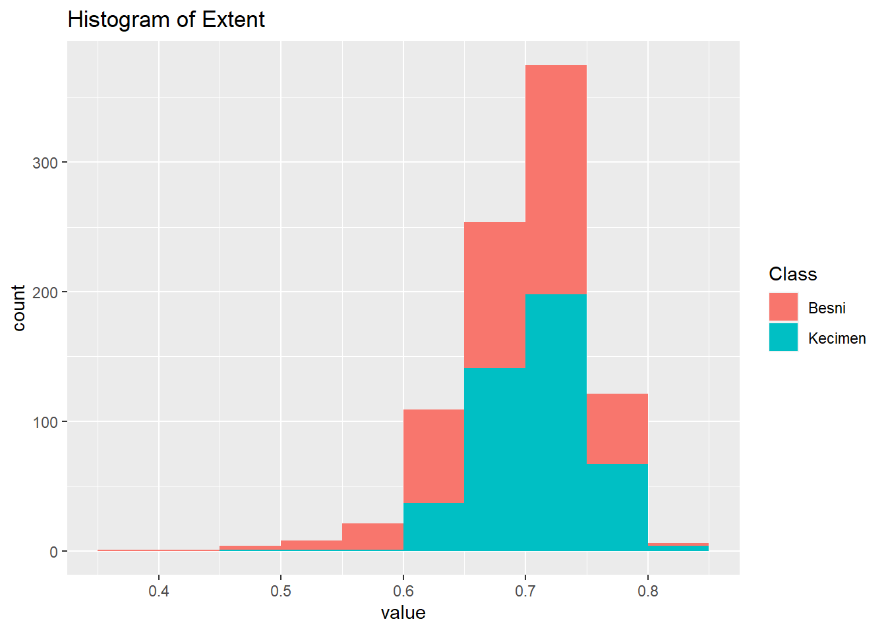
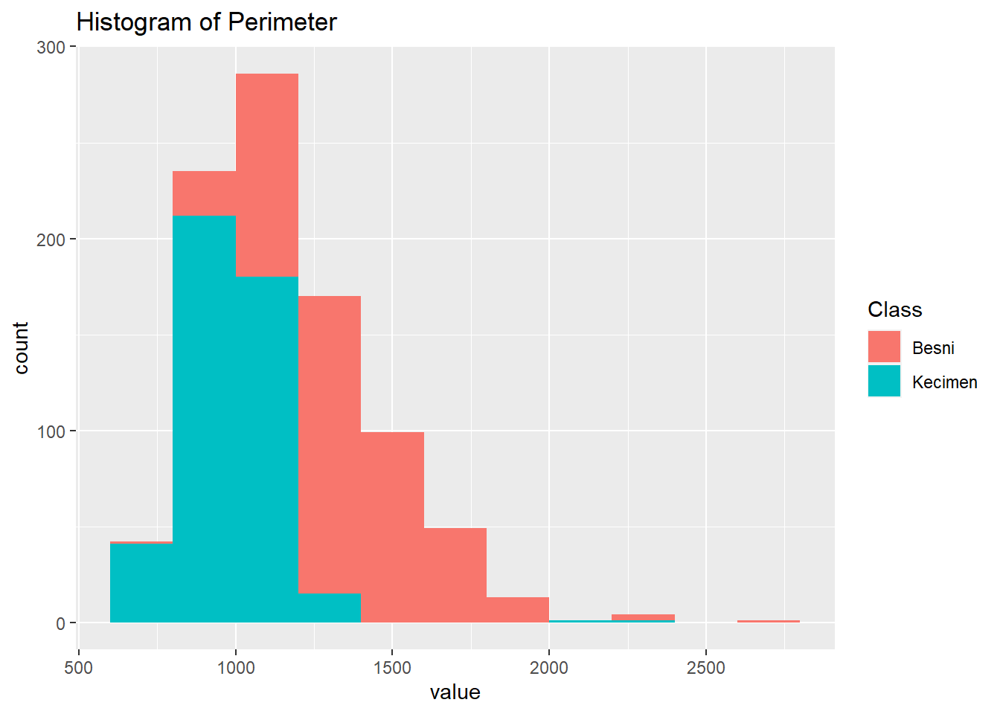

Las imágenes de las variedades de pasas Kecimen y Besni cultivadas en Turquía se obtuvieron con CVS. Se utilizaron un total de 900 granos de pasas, incluyendo 450 piezas de ambas variedades. Estas imágenes fueron sometidas a diversas etapas de pre-procesamiento y se extrajeron 7 características morfológicas.
Información de atributos:
Área: Da el número de píxeles dentro de los límites de la pasa.
Perímetro: Mide el entorno calculando la distancia entre los límites de la pasa y los píxeles que la rodean.
MajorAxisLength: Da la longitud del eje principal, que es la línea más larga que se puede dibujar en la pasa.
MinorAxisLength: Da la longitud del eje pequeño, que es la línea más corta que se puede dibujar en la pasa.
Excentricidad: Da una medida de la excentricidad de la elipse, que tiene los mismos momentos que las pasas.
Área convexa: Da el número de píxeles de la cáscara convexa más pequeña de la región formada por la pasa.
Extensión: Da la relación entre la región formada por la pasa y el total de píxeles en el cuadro delimitador.
Clase: Kecimen y pasas Besni.
1.Realizar un análisis estadístico descriptivo e inferencial, del conjunto de datos que guistéis de la página
The following objects are masked from 'package:stats':
filter, lag
The following objects are masked from 'package:base':
intersect, setdiff, setequal, union
library(ggstatsplot)
You can cite this package as:
Patil, I. (2021). Visualizations with statistical details: The 'ggstatsplot' approach.
Journal of Open Source Software, 6(61), 3167, doi:10.21105/joss.03167
Los datos con los que se trabajara son variedades de pasas Kecimen y Besni cultivadas en Turquía
# Cargar el conjunto de datos desde el archivo "Raisin_Dataset.csv"dattos<-read.csv("Raisin_Dataset.csv")head(dattos)
# Muestra la estructura de los datos y el tipo de cada variablestr(dattos)
'data.frame': 900 obs. of 8 variables:
$ Area : int 87524 75166 90856 45928 79408 49242 42492 60952 42256 64380 ...
$ MajorAxisLength: num 442 407 442 287 352 ...
$ MinorAxisLength: num 253 243 266 209 291 ...
$ Eccentricity : num 0.82 0.802 0.798 0.685 0.564 ...
$ ConvexArea : int 90546 78789 93717 47336 81463 51368 43904 62329 44743 66125 ...
$ Extent : num 0.759 0.684 0.638 0.7 0.793 ...
$ Perimeter : num 1184 1122 1209 844 1073 ...
$ Class : chr "Kecimen" "Kecimen" "Kecimen" "Kecimen" ...
#el número de filas y columnas en un conjunto de datosdim(dattos)
[1] 900 8
Tenemos 900 filas y 8 columnas
La función as.factor() sirve para convertir la variable “diagnostico” en un factor.
dattos$Class <-as.factor(dattos$Class)
Calcular estadísticos descriptivos numéricos
# Cargar el conjunto de datos desde el archivo "cancer.csv"datos <-read.csv("Raisin_Dataset.csv")# Seleccionar las columnas de interéssubset_datos <- datos[, -ncol(datos)] # Excluir la última columna# Calcular estadísticos descriptivos numéricosstats <-data.frame(Media =colMeans(subset_datos),Mediana =apply(subset_datos, 2, median),DesviacionEstandar =apply(subset_datos, 2, sd),ValorMinimo =apply(subset_datos, 2, min),ValorMaximo =apply(subset_datos, 2, max))# Mostrar los estadísticos descriptivosprint(stats)
Esta línea de código muestra los histogramas generados anteriormente. Ejecutarlo imprime una lista de histogramas l.plots para cada variable.
l.plots
[[1]]
[[2]]

[[3]]

[[4]]

[[5]]

[[6]]

[[7]]

Calculos de correlacion
# Calcular la matriz de correlaciónmatriz_cor <-cor(dattos[, c("Area", "MajorAxisLength", "MinorAxisLength", "Eccentricity", "ConvexArea", "Extent", "Perimeter")])# Realizar pruebas de correlación for (i in1:(ncol(matriz_cor)-1)) {for (j in (i+1):ncol(matriz_cor)) { cor_test <-cor.test(dattos[, i], dattos[, j])print(paste("Correlación entre", colnames(dattos)[i], "y", colnames(dattos)[j]))# Mostrar correlaciónprint(cor_test$estimate) print("____________________") }}
[1] "Correlación entre Area y MajorAxisLength"
cor
0.9327744
[1] "____________________"
[1] "Correlación entre Area y MinorAxisLength"
cor
0.9066499
[1] "____________________"
[1] "Correlación entre Area y Eccentricity"
cor
0.3361066
[1] "____________________"
[1] "Correlación entre Area y ConvexArea"
cor
0.9959197
[1] "____________________"
[1] "Correlación entre Area y Extent"
cor
-0.01349934
[1] "____________________"
[1] "Correlación entre Area y Perimeter"
cor
0.9613517
[1] "____________________"
[1] "Correlación entre MajorAxisLength y MinorAxisLength"
cor
0.7280302
[1] "____________________"
[1] "Correlación entre MajorAxisLength y Eccentricity"
cor
0.5836084
[1] "____________________"
[1] "Correlación entre MajorAxisLength y ConvexArea"
cor
0.9450309
[1] "____________________"
[1] "Correlación entre MajorAxisLength y Extent"
cor
-0.2038656
[1] "____________________"
[1] "Correlación entre MajorAxisLength y Perimeter"
cor
0.977978
[1] "____________________"
[1] "Correlación entre MinorAxisLength y Eccentricity"
cor
-0.0276835
[1] "____________________"
[1] "Correlación entre MinorAxisLength y ConvexArea"
cor
0.8956513
[1] "____________________"
[1] "Correlación entre MinorAxisLength y Extent"
cor
0.1453215
[1] "____________________"
[1] "Correlación entre MinorAxisLength y Perimeter"
cor
0.827417
[1] "____________________"
[1] "Correlación entre Eccentricity y ConvexArea"
cor
0.3482103
[1] "____________________"
[1] "Correlación entre Eccentricity y Extent"
cor
-0.3610615
[1] "____________________"
[1] "Correlación entre Eccentricity y Perimeter"
cor
0.4478452
[1] "____________________"
[1] "Correlación entre ConvexArea y Extent"
cor
-0.05480247
[1] "____________________"
[1] "Correlación entre ConvexArea y Perimeter"
cor
0.9766122
[1] "____________________"
[1] "Correlación entre Extent y Perimeter"
cor
-0.1734489
[1] "____________________"
Se muestra el resultado en una matriz de correlación con la función corrplot::corrplot().
dattos_escalado <- dattos[, -ncol(dattos)] # Excluir la última columnaclass<- dattos$Classdattos_escalado <-scale(dattos_escalado)#Calcular PCApca_resultado <-prcomp(dattos_escalado, scale. =FALSE)# Biplotbiplot(pca_resultado, main ="Grafico Biplot")# Los diagnósticos De M y B que sw encuentran en la variable dattos_escaladopoints(pca_resultado$x[class=="Kecimen", 1], pca_resultado$x[class =="Kecimen", 2], col ="green")points(pca_resultado$x[class=="Besni", 1], pca_resultado$x[class =="Besni", 2], col ="hotpink")# Para identificar Kecimen Y Besni segun sus colores, en este caso tenemos Kecimen de verde y Besni de rosadolegend("bottomright", legend =c("Kecimen", "Besni"), col =c("green", "hotpink"), pch =1, title ="Class", cex =0.7)
set.seed(123)# Leer el conjunto de datosdattos <-read.csv("Raisin_Dataset.csv")# Convertir la última variable en un factordattos$Class <-as.factor(dattos$Class)levels(dattos$Class) <-c("D","N")# Escalar las variables predictorasdattos[, 1:7] <-as.data.frame(scale(dattos[, -ncol(dattos)]))# Dividir los datos en conjunto de entrenamiento y conjunto de pruebatrain_index <- caret::createDataPartition(dattos$Class, p =0.8, list =FALSE)train_data <- dattos[train_index, ]test_data <- dattos[-train_index, ]# Ajustar un modelo de regresión logísticaglm_mod <-glm(Class ~ ., data = train_data, family ="binomial")# Realizar predicciones en el conjunto de pruebapredictions <-as.factor(ifelse(predict(glm_mod, newdata = test_data, type ="response") >=0.5, "N", "D"))# Evaluar el rendimiento del modelo en el conjunto de pruebacaret::confusionMatrix(predictions, test_data$Class)
Confusion Matrix and Statistics
Reference
Prediction D N
D 77 8
N 13 82
Accuracy : 0.8833
95% CI : (0.8272, 0.9263)
No Information Rate : 0.5
P-Value [Acc > NIR] : <2e-16
Kappa : 0.7667
Mcnemar's Test P-Value : 0.3827
Sensitivity : 0.8556
Specificity : 0.9111
Pos Pred Value : 0.9059
Neg Pred Value : 0.8632
Prevalence : 0.5000
Detection Rate : 0.4278
Detection Prevalence : 0.4722
Balanced Accuracy : 0.8833
'Positive' Class : D
Evaluación del modelo de regresión logística en el conjunto de datos de pasas.
La precisión del modelo es del 88.33% esto quiere decir que el modelo tiene un buen rendimiento,
La sensibilidad del modelo, que es la proporción de verdaderos positivos, es del 85.56%.
La especificidad del modelo, que es la proporción de verdaderos negativos, es del 91.11%.